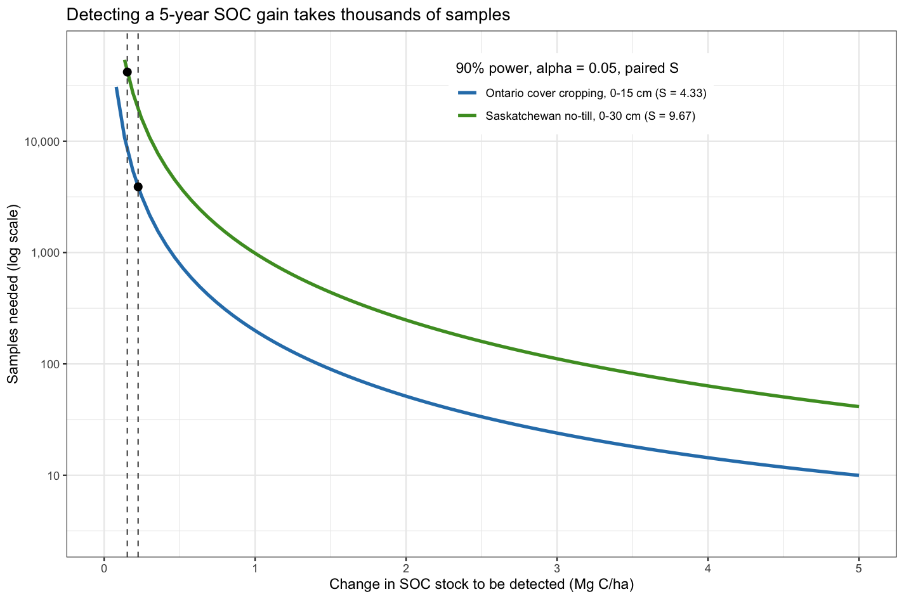
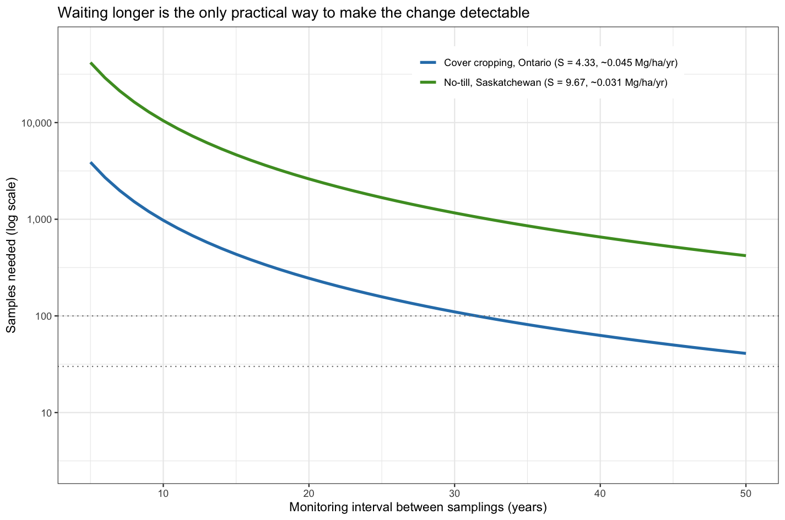
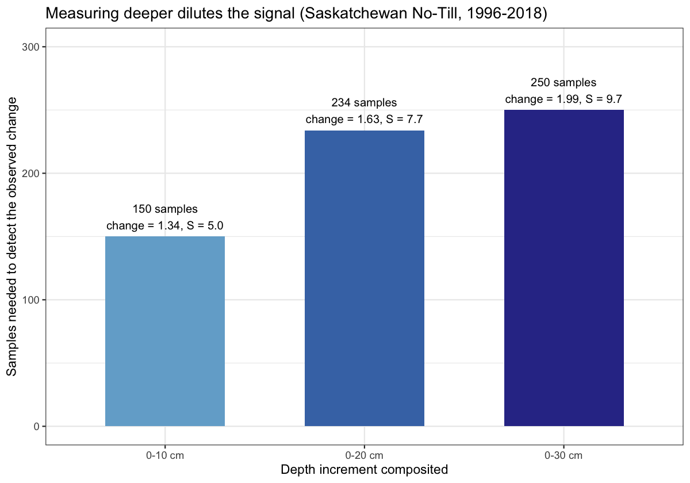

How Many Soil Samples Does It Take to Detect a Soil Carbon Change?
soil carbon measurement, power analysis, minimum detectable difference, sample size, measure-remeasure, VM0042, uncertainty deduction, soil carbon MRV, MMRV, SOC monitoring, carbon credits, soil sampling design
Soil carbon projects are built on being able to detect a change in soil organic carbon (SOC) due to a practice change. While that may seem straightforward, consistently doing so is not always easy. SOC gains from practices like no-till and cover cropping are small, slow, and take place in a background with high spatial and temporal variation. Before committing to a measurement program, it is worth asking honestly: with a realistic number of samples, can you actually detect a change?
This post works through that question using the power analysis and uncertainty rules in Verra’s VM0042 methodology, and grounds every number in real repeat-sample data from two datasets I have worked with: a Saskatchewan no-till dataset and Ontario cover cropping data.
The formula, in plain terms
VM0042 includes the standard power-analysis formula for this problem. The number of samples you need is:
\[n \geq \left(\frac{S\,(t_\alpha + t_\beta)}{MDD}\right)^2\]
Three quantities drive it:
- MDD is the minimum detectable difference: the size of SOC stock change you want to be able to detect (in Mg C/ha).
- S is the standard deviation of the change in SOC stock between your two sampling times.
- tα and tβ set your statistical standards: the false-positive rate (α, usually 0.05) and the power to detect a real change (usually 90%).
Smaller changes are harder to detect, so a smaller MDD demands more samples. More variable soils are harder to measure, so a larger S demands more samples.
S is the variability of the change, not the variability of the soil
This is the single most important detail. S is not the spatial variability of soil carbon at one point in time. It is the standard deviation of the difference at each location between the first and second sampling.
That distinction is the entire reason to resample the same locations over time rather than drawing fresh random samples each period. If you sample independent locations each time, the difference between the two surveys carries the full spatial variability of the landscape at both times: a sandy knoll measured once and a depression measured the next, differences that have nothing to do with your practice. When you return to the same georeferenced points, those large, static spatial differences subtract out, because each location is its own control. What remains in S is the genuine variation in change plus measurement and relocation error.
However, it is important to remember that spatial variation is still a concern, as fine scale variation in SOC can drive significant differences at the scale of a few meters or less, which makes consistent resampling challenging.
In the Saskatchewan data, the spatial standard deviation of SOC stock is roughly 16 Mg C/ha, which would put the standard deviation of an independent difference near 22 Mg C/ha. Resampling the same sites brings the standard deviation of the change down to about 9.7 Mg C/ha. Pairing more than halves the standard deviation and cuts the variance by about 80%, and because S is squared in the formula, that is a large reduction in samples. This is why VM0042 requires resample locations to be georeferenced and sampled in the same season: to preserve that pairing.
What real variability looks like
Here is where grounding the numbers in real data matters, because it changes the conclusion. Using the paired standard deviation of the change from each dataset:
- Saskatchewan no-till (benchmark network, 0 to 30 cm): S ≈ 9.7 Mg C/ha. This is a province-wide network of no-till farms resampled over 22 years.
- Ontario cover cropping data (0 to 15 cm): S ≈ 4.3 Mg C/ha. This comes from a controlled field study with uniform management and tight relocation, with all plots under cover-crop treatments.
The gap between those two is consistent with what you would expect moving from a controlled experiment to a network of real farms, although the datasets also differ in region, soils, practice, and sampling depth, so it is not a clean like-for-like comparison. The practical lesson still holds: the variability you measure at a research site is likely to understate what you face across working fields, and operational projects should expect values closer to the higher number.
Stratifying does less than you might hope. Within individual Saskatchewan soil zones, the paired S still ranges from about 6 to 11 Mg C/ha, so splitting the network by zone does not change the picture much.
One more check matters before applying these numbers to shorter intervals. If S grew with the length of the interval, a 22-year S would overstate the noise for a 5-year measurement. In the Saskatchewan data it does not: the paired S is about 10.6 over 9 years, 8.6 over 13 years, and 9.7 over 22 years. The variability is dominated by measurement, relocation, and small-scale soil differences rather than by how long the change has been accumulating.
Now put those values against expected rates of change. The forward-looking rates, based on modelling, are small:
- No-till in Saskatchewan: about 2.3 Mg C/ha of additional soil carbon over the next 75 years, or roughly 0.03 Mg C/ha per year.
- Cover cropping in Ontario: an effect of about 0.045 Mg C/ha per year.
Over a five-year monitoring interval, those become changes of roughly 0.15 Mg C/ha (no-till) and 0.22 Mg C/ha (cover crop). Feed them into the formula with the real S values, and the sample numbers become quite large.

Detecting the five-year cover-crop effect takes on the order of 3,900 samples. Detecting the five-year no-till gain takes about 42,000. Sampling that much would be completely impractical.
These figures also assume the simplest design: measuring change at one set of sites. If a project instead compares project sites against baseline control sites, it has to detect a difference between two groups’ changes, which roughly doubles the samples needed in each group. By the standard of a statistical test, these changes cannot be confirmed by direct measurement over a five-year window.
Precision has a price in VM0042
VM0042 does not actually require a project to pass that test. The methodology states that projects “are not required to take” the number of samples the power analysis suggests. What enforces precision instead is the uncertainty deduction (VM0042 Equation 74). The deduction applied to a project’s credited reductions is about 0.43 times the relative standard error of the estimate: the noisier your estimate relative to the change itself, the larger the share of credits deducted. A noisy estimate is not rejected, but it does significantly reduce the total credit value.
Additionally, the risk of failing to detect a real change rises sharply at lower sample numbers, particularly when the true change is small and variability is large.
That raises the next question: not “can I detect the change?” but “how much of the change will I lose to uncertainty?” Applying the Equation 74 rule (the uncertainty deduction equation) to the same five-year changes and real S values:
| Five-year change | Deduction reaches 100% (no credits) below | 50% deduction at | 20% deduction at |
|---|---|---|---|
| No-till, Saskatchewan (~0.15 Mg C/ha) | ~740 samples | ~2,970 samples | ~18,500 samples |
| Cover crop, Ontario (~0.22 Mg C/ha) | ~70 samples | ~280 samples | ~1,700 samples |
These estimates are optimistic, because they count only the sampling uncertainty in the project change. Uncertainty in the baseline and in any model used adds to the deduction. A five-year no-till measurement earns essentially nothing at any realistic sample size: below about 740 samples, the deduction consumes the entire change. A cover-crop project with a few hundred samples would earn credits, but lose around half of them to uncertainty.
With few samples, there is also a real chance that the observed change comes out near zero, or even negative, purely by chance, leaving nothing to credit.
Waiting is the main practical lever
If sampling harder cannot rescue a five-year measurement, what can? Time. Because the cumulative change since the baseline grows as you wait while the variability stays roughly constant, the required samples fall roughly as one over the elapsed time squared. Every doubling of the time since baseline cuts the samples needed roughly fourfold.
However, VM0042 requires SOC stocks to be remeasured at least every five years. Proponents need to be realistic about what is likely to be observable over a five-year period: small changes, carrying large uncertainty deductions.

The figure shows both the power and the limit of this lever. The requirement drops steeply as the interval grows. But for these slow rates and real variances, reaching even a large program of around 100 samples takes roughly three decades for the Ontario cover-crop case, and more than 50 years for the Saskatchewan no-till case. Five- and ten-year measurement intervals do not get you there. The arithmetic only works over multi-decade baselines.
Sampling design can shrink the signal before you start
Power is not the only thing a measurement program controls. Design choices can change the effective size of the signal itself, and depth is the clearest example. SOC change from surface-acting practices concentrates near the surface, while deeper layers add carbon and variance but little signal. Compositing over a deeper interval therefore dilutes the change you are trying to detect.
The Saskatchewan data show this directly. The gain over 1996 to 2018 concentrates in the top 10 cm: the 0 to 10 cm layer holds about two-thirds of the 0 to 30 cm change, while carrying roughly half the variability.

Measuring the 0 to 10 cm increment needs about 149 samples to detect its change; integrating down to 0 to 30 cm raises that to about 251. The deeper you composite, the more the added variance outruns the added signal. VM0042 requires reporting to at least 30 cm on an equivalent-soil-mass basis, and it permits SOC content to be measured on a single mixed sample spanning 0 to 50 cm. That is convenient, but if the change lives in the top layer, a single deep composite buries it. Measuring and analyzing by increment, rather than bulking, preserves the signal that a deep composite averages away.
The takeaway
For the slow SOC gains that no-till and cover cropping actually deliver, direct measurement over a short interval cannot reliably detect the change, and under VM0042 the resulting uncertainty deduction will consume most or all of the credits. That leaves three options: wait decades for the signal to accumulate, use a well-validated model with periodic measurement to true it up, or accept a large uncertainty deduction on whatever you measure. VM0042 provides for all three, and the model-based pathway exists precisely because short-interval measurement cannot consistently detect SOC stock changes without an impractically large number of samples.
None of this is an argument against building soil carbon. The gains are real and worth pursuing. It is an argument for being realistic about what measurement can and cannot confirm on the timescales that projects operate on, and for designing monitoring (the interval, the depth, the pairing, and the stratification) around that reality.